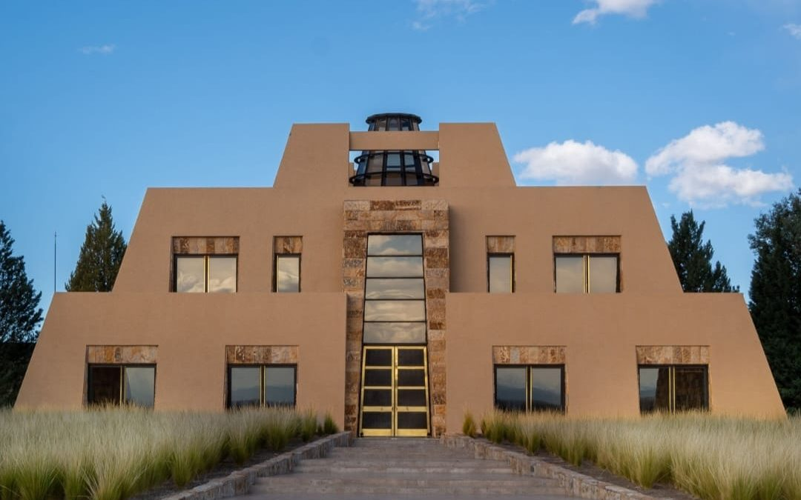
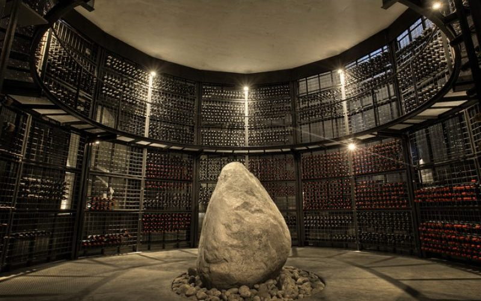
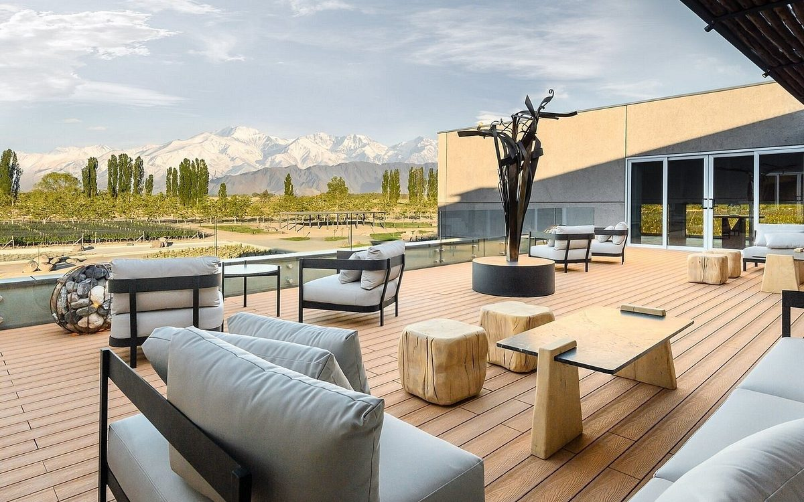
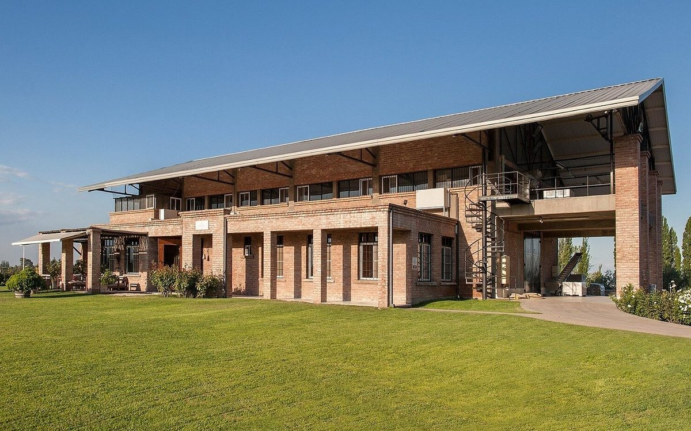
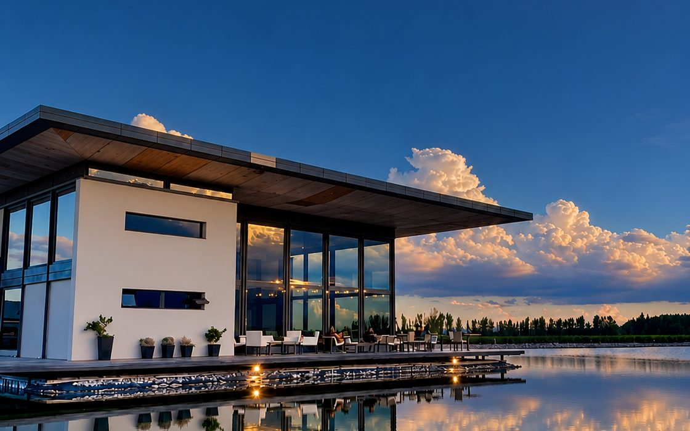
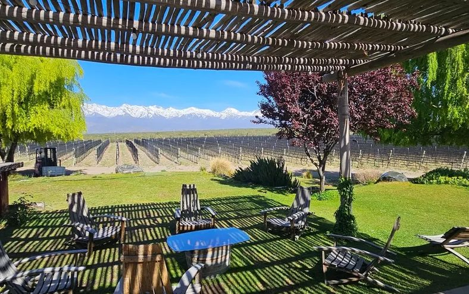
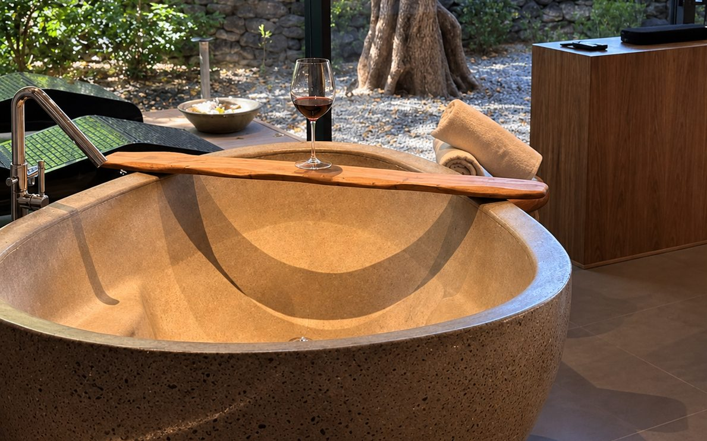
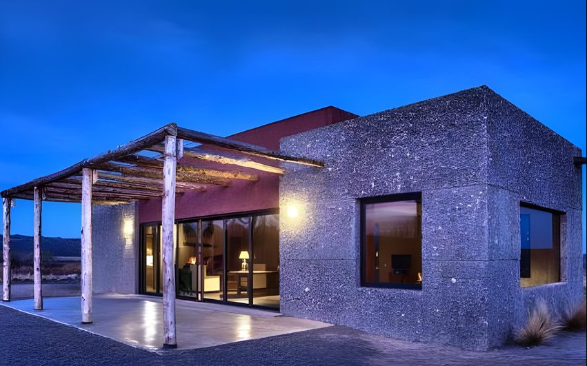

Catena Zapata
AgreloA pirâmide no meio dos vinhedos e uma das marcas de vinho mais admiradas do mundo. A visita mais procurada de Mendoza.
Max Wine House · guia para visitantes
Vinícolas e onde ficar
Em Mendoza quase não chove. Cada vinhedo, e cada árvore de suas ruas, vive da água do degelo dos Andes, que desce por canais abertos há séculos. Desse oásis sai a maior parte do vinho argentino: sete de cada dez hectares de vinhedos do país estão aqui, e quase todo o Malbec.
E se bebe olhando para a cordilheira: vinhedos a mais de mil metros de altitude, diante do Aconcágua, a montanha mais alta das Américas.
Uma seleção da Max Wine House: lugares com história para contar.
As clássicas que o mundo inteiro quer visitar. Reserve-as primeiro.

A pirâmide no meio dos vinhedos e uma das marcas de vinho mais admiradas do mundo. A visita mais procurada de Mendoza.

A vinícola argentina mais bem colocada no ranking mundial de enoturismo de 2025. Vinhas centenárias, cozinha de fazenda e casas para se hospedar.

Uma vinícola inspirada na Divina Comédia, com os vinhos de Alejandro Vigil e uma das experiências gastronômicas mais procuradas da província.

Arquitetura de pedra aos pés dos Andes. Depois de liderar o ranking mundial por três anos seguidos, entrou para o seu Hall da Fama.
Visite-as em Mendoza e, na volta, seus vinhos esperam por você na Max Wine House.

A vinícola autoral de Matías Riccitelli, no ranking mundial de enoturismo de 2025. Vinhas velhas e um bistrô entre elas.

A vinícola de Paul Hobbs em Mendoza, que em 2025 entrou no ranking mundial de enoturismo.

Uma das vinícolas mais premiadas do país. A degustação sentada de frente para a cordilheira, com Malbecs de vinhedos centenários, é o que os visitantes mais destacam.

Uma vinícola ultramoderna que parece uma nave entre vinhedos a 1.200 metros, com restaurante próprio.

A vinícola mais alta de Mendoza, dos irmãos Michelini. Visitas em grupos pequenos, com reserva.
Acordar entre vinhedos, com a cordilheira à frente e a vinícola a poucos passos.

O hotel de Susana Balbo, a primeira enóloga da Argentina. Suítes com spa privativo, membro da Relais & Châteaux.

Poucos quartos dentro do complexo da vinícola, com restaurante, golfe e pesca de trutas.

Dormir dentro de uma das vinícolas mais visitadas do país, com sua cave em forma de anfiteatro e um centro de arte a poucos passos.
Escolha quanto tempo você tem e reserve um roteiro pronto.
Roteiros prontos para reservar, com transfer privado incluído.
Catena Zapata com um jogo para criar o seu próprio corte e almoço no Quimera, o bistrô da Achaval Ferrer recomendado pelo Guia Michelin.
Reservar este roteiroA combinação mais pedida: visita à Catena e almoço na Casa Vigil, com estrela Michelin.
Reservar este roteiroVocê se hospeda em Mendoza ou em Chacras de Coria e todos os dias buscam e levam você de volta ao hotel. Sem dirigir.
Visita à Catena Zapata de manhã e almoço na Casa Vigil, com transfer privado.
Reservar dia 1Visita e degustação de cinco vinhos na Zuccardi Piedra Infinita, de frente para os Andes, com transfer privado de ida e volta.
Reservar dia 2O mais escolhido e mais bem avaliado do centro, com vista para a montanha e um café da manhã muito elogiado.
Consultar hospedagemO clássico de luxo em frente à praça principal, com spa e restaurantes próprios.
Consultar hospedagemTranquilidade entre vinhedos e a melhor avaliação da região, mais perto das vinícolas de Luján.
Consultar hospedagemApaixonou-se por um vinho na viagem? Conseguimos direto da vinícola e entregamos no seu endereço em Buenos Aires.
Ver os vinhos da MWH Saca-rolhas de dois estágiosO dos sommeliers: não quebra rolhas antigas
Saca-rolhas de dois estágiosO dos sommeliers: não quebra rolhas antigas
 Taças de cristalA taça certa para cada vinho realça seus aromas e seu sabor
Taças de cristalA taça certa para cada vinho realça seus aromas e seu sabor
 DecanterPara os vinhos de guarda que precisam respirar
DecanterPara os vinhos de guarda que precisam respirar
 Tampa a vácuoPara que a garrafa aberta dure vários dias
Tampa a vácuoPara que a garrafa aberta dure vários dias
Fale com a gente e conseguimos para você.
Para ter à mão durante a viagem. No celular, toque no número para ligar.
Confirme os horários antes de ir. Se precisar trocar dinheiro, consulte no hotel quais são as opções mais convenientes e seguras, e evite o aeroporto, onde a comissão costuma ser bem mais alta. Compare a cotação antes de fazer o câmbio.